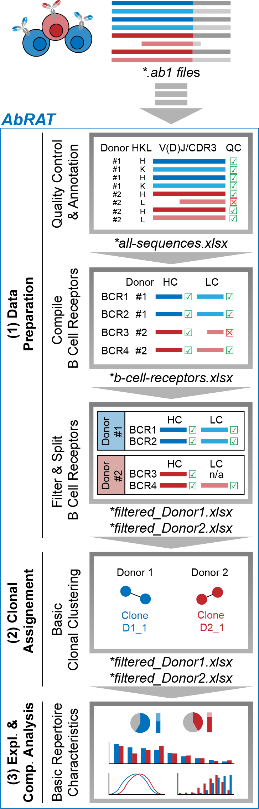

AbRAT Workflow

1. Data Preparation
Quality Control & Annotation:
In the first step, the module processes *.ab1 files from a dedicated ab1files folder (see Folder Structure).
These files must be renamed according to a specific naming scheme (see Data Format). Using IgBLAST and BLAST for sequence annotation,
along with Biopython’s SeqIO for quality score extraction, several user-defined quality metrics are evaluated.
The resulting sequence data and quality measures are saved in an all-sequences.xlsx file.Compile B-Cell Receptors:
Next, the module combines the best available heavy and light chain sequences from one or more all-sequences.xlsx file(s)
into individual B-cell receptors. The resulting data is saved as a b-cell-receptors.xlsx file.Filter & Split B-Cell Receptors:
Finally, the combined B-cell receptor data is filtered for specific quality or sequence features (e.g., only productive chains)
and split into subgroups (e.g., by donor). A separate filtered_subgroup.xlsx file is generated for each subgroup.
These tables represent your refined repertoire data, ready for downstream analyses.
2. Clonal Assignment
Clonal Clustering:
The goal is to assess clonal relationships among individual B cells. This module provides a modular framework with configurable
filter settings and clustering algorithms to infer clonal relationships based on sequence similarities.
Clustered BCRs are labeled with a unique clone name and optionally a color within the filtered_subgroup.xlsx files.
Detailed information on the implemented clustering algorithms is provided separately.
Note: You may also infer clonal relationships using an external tool and simply record the results in the designated columns.
3. Exploratory & Comparative Analysis
Basic Repertoire Characteristics:
Finally, explore your filtered and clustered repertoire data (from the filtered_subgroup.xlsx files) using this module.
Key metrics are computed and presented on an interactive dashboard, enabling you to save individual graphs.
Note: Any tables following the b-cell-receptors.xlsx layout can also be uploaded and analyzed here.